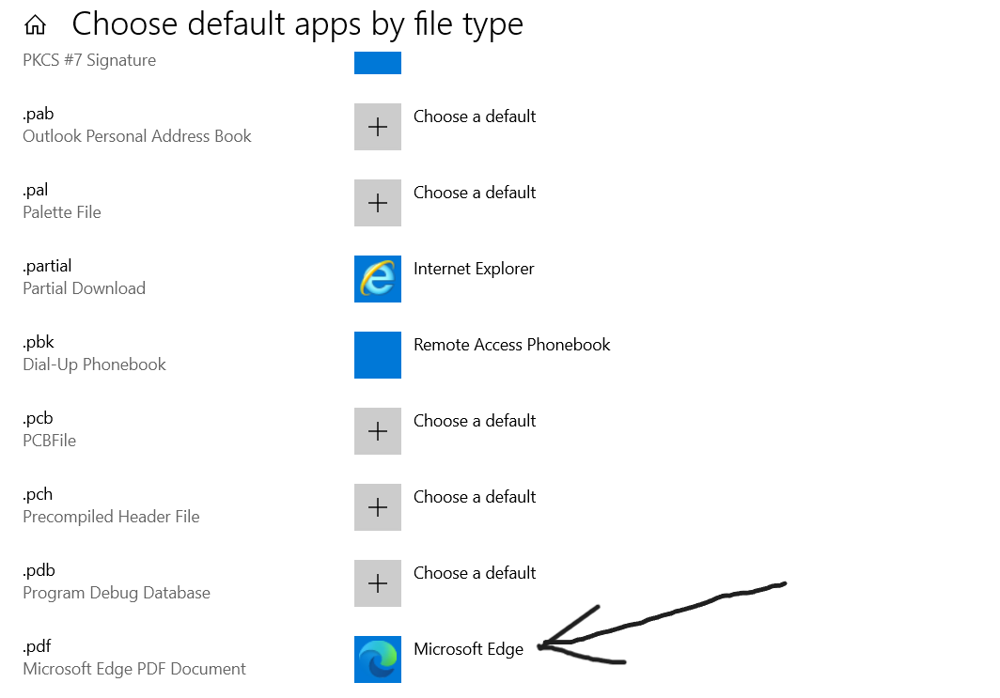

PDF Files Not Opening
Potential Issues
PDF Reader is not installed
File is not opening with correct PDF Reader
Resolution
Steps:
- Ask for User's PC name or IP address and remote into their PC
- search for PDF Reader in Windows search bar
- If the Reader does not show up then install the software
- If It does show up then type "File Association" into windows search bar
- Scroll down and confirm that .pdf files are opening with the correct software

NB. "File Association" can be used to verify that any file type is being opened with the appropiate software.